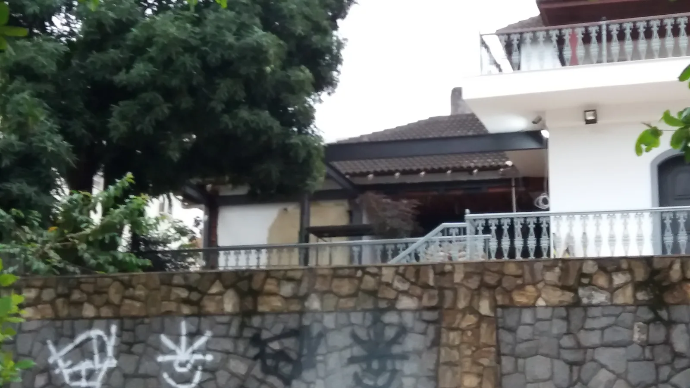
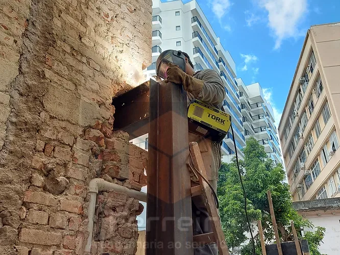
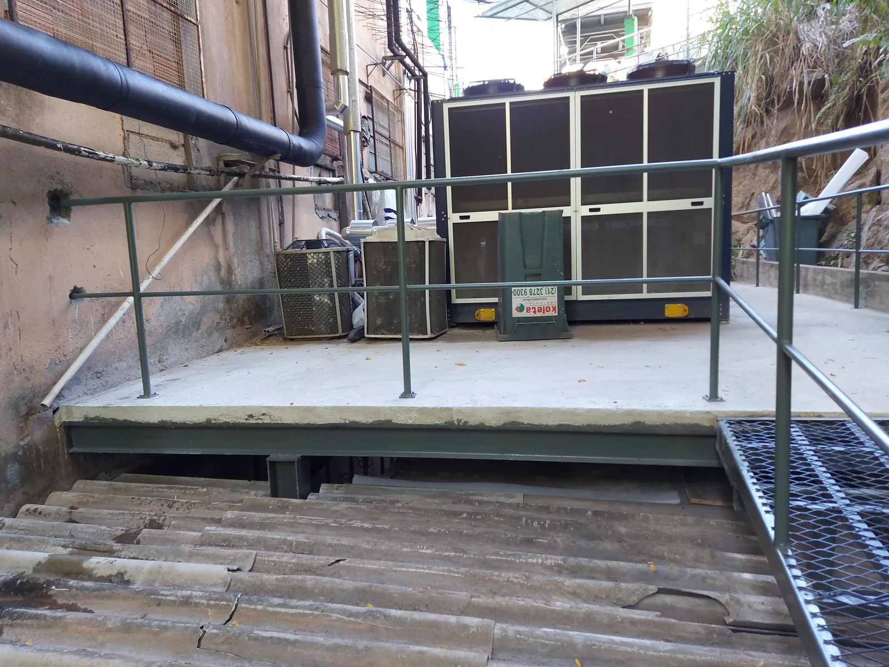
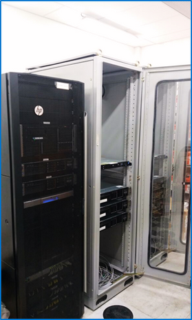

Obra documentadaReforço - Campo da Areia - Pechincha
2020Registro de obra de reforço estrutural realizado pela Ferreira.

OBRAS
Uma seleção inicial de ambientes, reformas e adequações realizadas pela Ferreira.
CASOS REAIS
Registros de obras de reforço estrutural realizadas pela Ferreira.

Obra documentadaRegistro de obra de reforço estrutural realizado pela Ferreira.

Obra documentadaRegistro de obra de reforço estrutural realizado pela Ferreira.

Obra documentadaRegistro de obra de reforço estrutural realizado pela Ferreira.
Também já realizamos: Reforço estrutural com acréscimo — conceito aberto (maio de 2021).
REFERÊNCIAS VISUAIS
Imagens de referência para apresentar áreas de atuação. Os casos documentados estão destacados acima.
 CorporativoProjeto em destaque
CorporativoProjeto em destaque CorporativoCorporativo
CorporativoCorporativo Acessibilidade
Acessibilidade Corporativo
Corporativo
InfraestruturaTRAJETÓRIA
Alguns projetos já entregues: Conjunto Comercial Plínio Corrêa, Condomínio Vila Nova e Galpão Industrial São Cristóvão.
VAMOS CONVERSAR